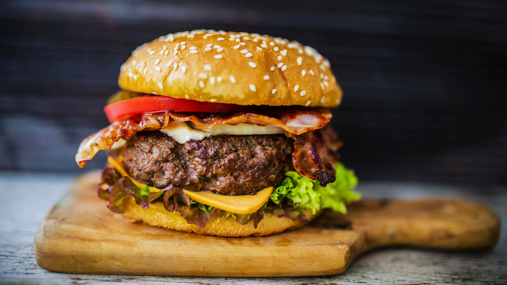

A hamburger is a popular dish consisting of a ground beef patty, typically cooked on a grill or stovetop, served inside a bun. It’s often topped with a variety of ingredients like lettuce, tomato, cheese, pickles, onions, ketchup, and mustard. Variations can include different meats, toppings, and condiments, making it a customizable and widely loved meal.